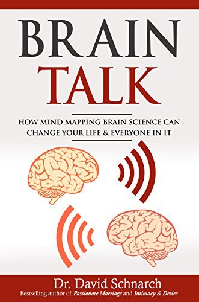
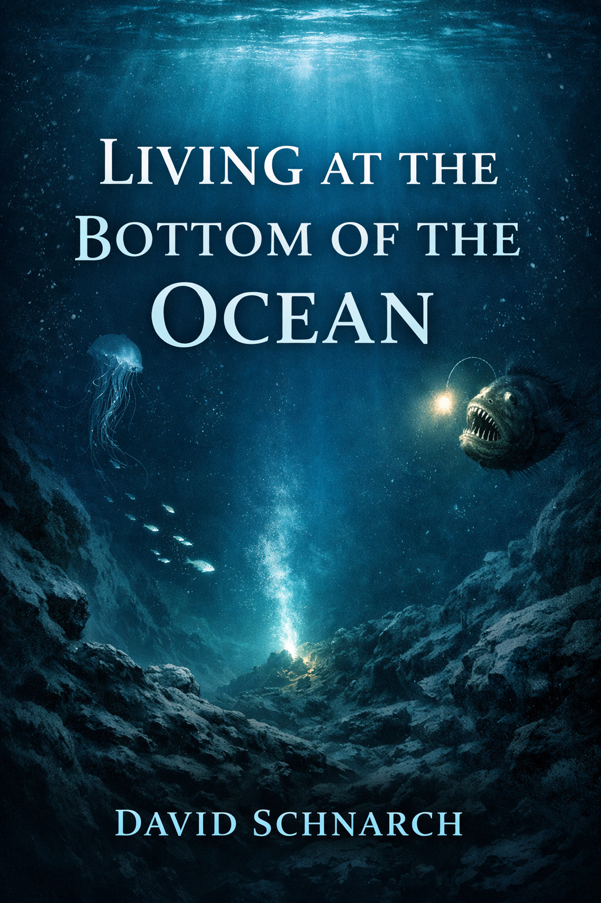

What Is
Crucible Therapy?
Crucible Therapy is Dr. David Schnarch's approach to couples therapy. It is built around differentiation: learning to stay grounded, honest, and connected when conflict, desire, and emotional pressure rise in a relationship.
Overview
It treats relationship pressure as something to understand, not just something to calm down.
If you are new to the model, these three ideas make the rest of the site easier to follow.
Differentiation
The central skill is staying connected without losing yourself, shutting down, or trying to control your partner.
Read about differentiation →Pressure Reveals Pattern
Conflict, desire problems, and emotional gridlock reveal how each person handles anxiety, shame, closeness, and dependence.
Read the introduction →More Than Communication Tips
This approach is less interested in polished scripts than in what each person does when intimacy becomes difficult.
See how it differs →Issue Guides
These four guides show how the Crucible model understands the relationship problems people most often search for.
Use them when you want to see how this approach frames a specific issue, not just the theory behind it.
Communication
See why communication problems are often less about skill and more about anxiety, reactivity, and what people cannot tolerate hearing.
Open the communication guide →Intimacy and Desire
Understand how Crucible Therapy thinks about sex, desire differences, erotic pressure, and emotional closeness.
Open the intimacy guide →Infidelity
See how the model approaches betrayal, disclosure, trust, and responsibility after an affair or breach of loyalty.
Open the infidelity guide →Disconnection
See how the model understands a relationship that feels distant, numb, shut down, or more like roommates than partners.
Open the disconnection guide →Core Books
These four books are the main way into David Schnarch's work.
If you want the original source material behind the ideas on this site, start with these summaries and then read the book that best matches your question.
Passionate Marriage
The foundational text of Crucible Therapy, exploring how differentiation transforms sexual intimacy and emotional connection in long-term relationships.
Read SummaryIntimacy & Desire
A deep dive into the relationship between emotional intimacy and sexual desire, offering insights into rekindling passion through personal growth.
Read Summary
Brain Talk
Exploring the neuroscience behind intimate relationships and how our brains shape—and are shaped by—our closest connections.
Read Summary
Living at the Bottom of the Ocean
Schnarch's final, posthumously released work on emotional regression—understanding and recovering from those moments when we "lose it."
Read Summary